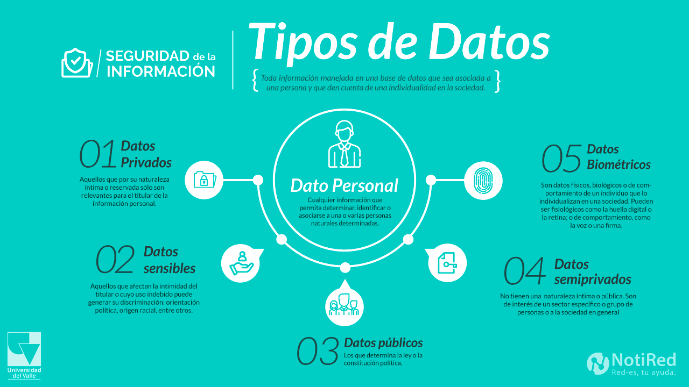

(Esdercom. (2023, 27 julio))."The management of personal data in the university setting does not deviate from the general and common rules that apply to other contexts and other types of processing that are equally protected by the current personal data protection regime in our country. However, it is possible to identify certain scenarios that contribute to the need to address particularities of the university environment, which require a more detailed analysis."
In the university environment, the protection of personal data is often overlooked, but it is actually fundamental. Every time we share information such as our name, email address, or even academic data, we leave a digital footprint that must be protected. Universities have a responsibility to handle this information securely and respect the privacy of each individual, but it is also important for students to be aware of how they use and protect their own data. Understanding this helps avoid risks such as the misuse of information or potential privacy breaches.
Universities should be able to handle personal data in order to comply with current data protection regulations in the country, which includes implementing measures to protect the privacy of student and employee information.
Universities manage various types of personal information that are crucial to their operation, such as identification, academic, and contact data. When we talk about personal data, not all of it has the same level of importance or risk. Some is basic information, like a name or identification number, which allows us to recognize a person. There is also more private data, such as an address, phone number, or email address, which requires greater care because it can be misused. On the other hand, there is sensitive data, which is the most delicate, as it includes information about health, beliefs, sexual orientation, or personal aspects that could affect someone's privacy if disclosed. Understanding these differences helps us make better decisions about what to share and what to protect in the digital environment.

The image illustrates that personal data is not all the same; it is divided into several categories based on its level of privacy. For example, there is public data, which is information that anyone can easily access, such as a name or certain basic details. There is also semi-private data, which is neither entirely intimate nor completely public, as it is usually of interest only to certain groups. On the other hand, there is private data, which is part of each individual's personal life and should not be shared without authorization. Furthermore, the image highlights sensitive data, which is the most delicate because it can directly affect privacy or even lead to discrimination if misused, such as information about health or personal beliefs. Finally, biometric data is also included, which allows for the unique identification of a person, such as fingerprints or facial recognition.
Talking about best practices in the digital environment isn't just about following rules, but about developing habits that help us use technology safely and responsibly. Small actions like creating strong passwords, not sharing personal information with strangers, and verifying what we see before sharing it can make a big difference. It also means being respectful of others online, since there's a real person behind every screen. Ultimately, it's about being aware of what we do online and making choices that protect ourselves and those around us.
A classmate uploads a photo of his university ID to social media. What's the safest thing to do?